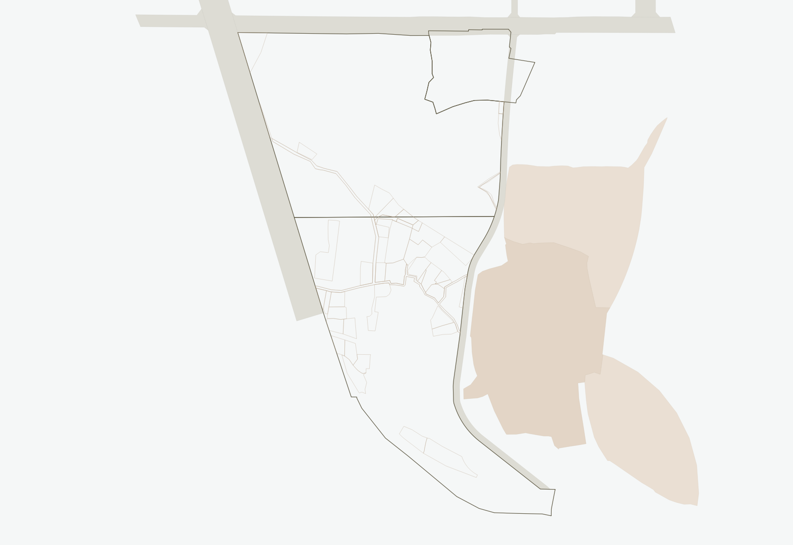
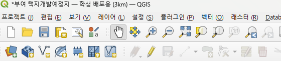
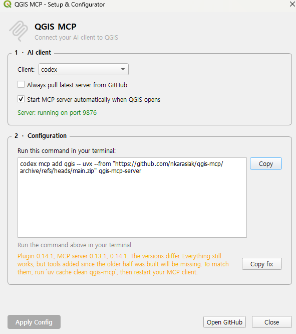

FIELD GUIDE / 설계스튜디오 III
단지계획
땅따먹기.
설치는 함께.
어떤 마을을 만들지는, 나의 생각으로.
Windows · 로컬 Codex · QGIS 4.2.1 / 4.2.2
설계 조건과 실제 자료를 바탕으로 진행합니다.
배경의 B안은 수업 확정 경계가 아닙니다.
LESS SETUP. MORE THINKING.
처음에는,
세 가지만 해주세요.
- 01
- 02
- 03
준비 요청문 전달
아래 요청문을 Codex에 보냅니다. 설치·설정은 맡기고, 로그인·관리자 승인·필요한 재시작을 직접 합니다.
LOCAL WORKSPACE
같은 실습 폴더를
QGIS와 Codex에서 엽니다.
로컬 폴더 연결은 Codex에게 “이 폴더의 자료로 작업해 줘”라고 작업 위치를 정해주는 것입니다. QGIS와 통신하는 MCP 연결은 별도로 확인합니다.
- 파일 탐색기에서 실습 전용 폴더를 만듭니다.
예를 들어 문서 폴더 안에단지계획실습을 만듭니다. 이름과 위치는 자유이며, 나중에 다시 찾을 수 있는 곳이면 됩니다. - 배포 ZIP을 이 폴더에 모두 풉니다.
ZIP 안에서 바로 실행하지 않습니다. 배포본의 하위 폴더 구조를 유지하고 QGZ만 따로 옮기지 않습니다. 원본 ZIP은 보관합니다. - 실제 자료가 들어 있는 폴더의 경로를 확인합니다.
압축을 풀면서 폴더가 한 겹 더 생길 수 있습니다. 파일 탐색기에서 QGZ와 데이터가 있는 위치로 들어간 뒤 주소 표시줄을 눌러 전체 경로를 확인합니다. - Codex에서 해당 폴더를 프로젝트로 추가합니다.
로컬 폴더를 선택하는 화면에서 방금 확인한 폴더를 선택합니다. 앱 버전에 따라 프로젝트 추가·폴더 열기 등의 이름으로 표시될 수 있습니다. ZIP이나 QGZ 파일 하나가 아니라 폴더를 선택합니다. - 그 프로젝트 안에서 로컬 작업을 시작합니다.
작업 위치가 내 PC의 실습 폴더인지 확인합니다. 로컬·워크트리·클라우드 선택이 있다면 이 실습은 로컬을 사용합니다. 일반 웹 채팅에 폴더 경로만 적는 것으로는 내 PC 폴더가 연결되지 않습니다. - Codex에게 폴더를 제대로 열었는지 확인시킵니다.
“현재 작업 폴더의 전체 경로와 바로 아래 파일 목록을 보여 줘. QGZ와 GPKG가 어디에 있는지도 찾아 줘.”라고 요청합니다. 파일 탐색기에 보이는 파일명과 같은지 비교합니다.
QGZ는 지도의 구성과 표시 설정을 담는 프로젝트 파일이고, GPKG는 실제 지도 데이터를 담는 파일 형식입니다. 배포본에 다른 데이터 폴더가 있으면 그것도 함께 유지합니다. Codex가 폴더 파일을 볼 수 있어도 QGIS MCP 연결까지 끝난 것은 아닙니다.
QGIS + QGIS MCP
플러그인까지 연결해야
준비가 끝납니다.
QGIS는 4.2.1 또는 4.2.2 중 어느 버전이든 사용하세요. 둘 중 하나가 이미 설치되어 있다면 수업을 위해 다시 설치할 필요는 없습니다.
QGIS MCP 플러그인은 반드시 필요합니다. 아래 준비 요청문으로 Codex에 설치와 활성화를 맡기세요. 이미 처리됐다면 학생이 따로 설치하지 않아도 됩니다. Codex가 자동으로 처리하지 못했거나 아이콘이 보이지 않는 경우에만 다음 순서로 직접 설치합니다.
QGIS MCP 플러그인 설치하기
플러그인은 QGIS에 기능을 추가하는 작은 프로그램입니다. QGIS MCP를 설치하면 Codex가 QGIS와 연결해 지도 자료를 읽고 편집할 수 있습니다.

- 상단의 플러그인(P)을 누르고 플러그인 관리 및 설치를 엽니다.
- 검색창에 QGIS MCP를 입력합니다.
- 제작자가 Nicolas Karasiak인지 확인하고 플러그인 설치를 누릅니다. 이미 설치되어 있으면 목록에서 체크되어 있는지 확인합니다.
- 창을 닫고 QGIS MCP 아이콘이 생겼는지 확인합니다. 필요한 경우 QGIS를 다시 시작합니다.
- QGIS MCP 아이콘 옆 메뉴에서 Configure…를 열어 아래 설정을 확인합니다.

이 창에서는 이렇게 확인하세요.
- Client: codex
연결할 프로그램을 Codex로 선택합니다. - Always pull latest server from GitHub: 해제
매번 새 버전을 받는 옵션입니다. 수업에서는 꺼둡니다. - Start MCP server automatically when QGIS opens: 체크
다음 실행부터 서버가 자동으로 켜지도록 합니다. - Server: running on port 9876
QGIS 쪽 서버가 실행 중이라는 뜻입니다. Codex 연결 완료를 의미하지는 않습니다. - Copy 버튼으로 명령을 복사해 Codex에게 전달
“이 설정으로 QGIS에 연결해 줘. 설치된 플러그인과 연결 프로그램의 버전도 맞춰 줘.”라고 함께 보냅니다. 이미 연결되어 있다면 다시 등록할 필요는 없습니다.
긴 명령어를 직접 해석하거나 수정할 필요는 없습니다. QGIS 안의 플러그인과 Codex 쪽 연결 프로그램이 서로 맞는 버전이어야 한다는 점만 기억하세요. 확인과 설정은 Codex에게 맡깁니다.
주황색 경고가 있으면 이 창을 캡처해 Codex에 보내고 “버전이 다르다는 경고가 나와. 원인을 확인하고 연결되게 고쳐 줘.”라고 요청하세요.
준비 요청문과 연결 확인으로 이동 ↓BEFORE YOU CONNECT
QGIS를 먼저 켜두세요.
설치와 설정이 끝났다면 QGIS 실행 → 실습 프로젝트 열기 → MCP 서버 실행 확인 → Codex에서 연결 점검 순서로 진행합니다. QGIS가 꺼져 있으면 플러그인 서버와 연결할 수 없습니다.
- QGIS를 켜고 실습 폴더의 QGZ를 엽니다. 프로젝트 로딩이 끝나고 지도가 표시될 때까지 기다립니다. 자료가 아직 없으면 빈 프로젝트로 연결부터 확인할 수 있습니다.
- QGIS MCP 아이콘이 켜져 있는지 확인합니다. 꺼져 있다면 아이콘을 눌러 서버를 시작합니다. 여러 QGIS 창이 열려 있다면 저장할 작업을 먼저 저장하고 실습할 창만 남깁니다.
- QGIS를 켜둔 채 Codex의 같은 실습 폴더 작업으로 돌아옵니다. 아래 실습 02의 연결 확인 요청문을 보냅니다. 여기서 GPT에게 요청한다는 것은 로컬 Codex에서 대화한다는 뜻입니다.
- 작업 중에는 QGIS를 종료하지 않습니다. 연결 설정 변경으로 Codex만 다시 시작하라는 안내를 받았다면 QGIS는 켜둡니다. QGIS도 재시작했다면 프로젝트와 MCP 서버를 다시 확인하고 연결 점검을 반복합니다.
YOUR WORKSPACE
한 단계씩, 같이.
FROM THE ACTUAL QGIS PROJECT
읽은 땅에서,
하나의 초안으로.
같은 경계를 읽고 다른 선택을 할 수 있습니다.
이 사례는 보존을 우선한 한 가지 시나리오입니다.
경계와 주변의 관계
레이어가 어떤 자료인지 먼저 확인합니다. 도시계획도로 도형이 있다고 해서 현장에 개설된 도로라고 단정하지 않습니다.
취락과 물길을 남기는 안
존치 범위와 주거군 배치는 사례의 가정입니다. 주민 협의 결과나 학생들이 따라야 할 조건이 아닙니다.
그림 밖에 남은 질문
기존 세대수·지형·배수·일조와 현행 허용기준은 미검증입니다. 도형 검산의 통과가 설계의 적합성을 보증하지 않습니다.
MY DESIGN BRIEF
내 생각을
작업의 기준으로.
아직 정하지 않은 것은 비워두세요.
빈 항목은 ‘미정’으로 기록됩니다.
내 기록 지우기
이 페이지에서 체크한 진행도와 계획 노트만 지웁니다.
WHEN YOU GET STUCK
막힌 곳부터 다시.
처음부터 재설치하지 않아도 됩니다.
현재 상태와 오류를 함께 전달하세요.